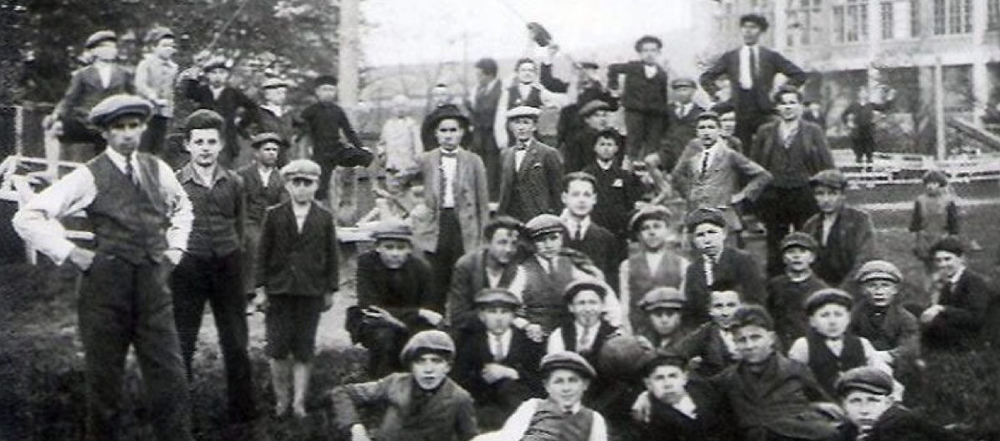

O NÁS
Škola práce Tomáše Bati vzniká jako odpověď na potřebu vychovávat nejen šikovné řemeslníky,
ale především samostatné, poctivé a pracovité lidi, kteří si váží své práce i času druhých.
Zakladatel Tomáš Baťa věří, že výchova musí jít ruku v ruce s odpovědností,
a že mladý člověk se nejlépe učí tím, že koná – tedy že pracuje, přemýšlí a vytváří něco užitečného.
Tato myšlenka tvoří základ celé školy.
Od samého začátku se škola stává nejen místem výuky, ale i domovem a komunitou.
Studenti zde tráví většinu svého času – žijí na internátu, účastní se výuky i praktické práce,
mají pevně daný denní režim a učí se spolupracovat i řešit problémy.
Výchova zde není jen otázkou znalostí a dovedností, ale především charakteru.
Důraz se klade na pořádek, dochvilnost, čestnost, úctu k ostatním a schopnost nést odpovědnost
za vlastní činy.
Škola funguje v úzkém propojení s výrobními závody Baťových podniků,
což umožňuje studentům od prvního dne zapojit se do reálné výroby a pochopit,

jak jejich práce ovlivňuje ostatní. Tímto propojením získávají nejen zkušenosti,
ale i pokoru a sebedůvěru. Výuka je postavena na rovnováze mezi teorií a praxí.
Studenti se učí účetnictví, strojírenství, technologii, obchod, ale i jazykům,
dějinám a etice. Cílem není jen naučit, ale vychovat člověka schopného myslet v souvislostech.